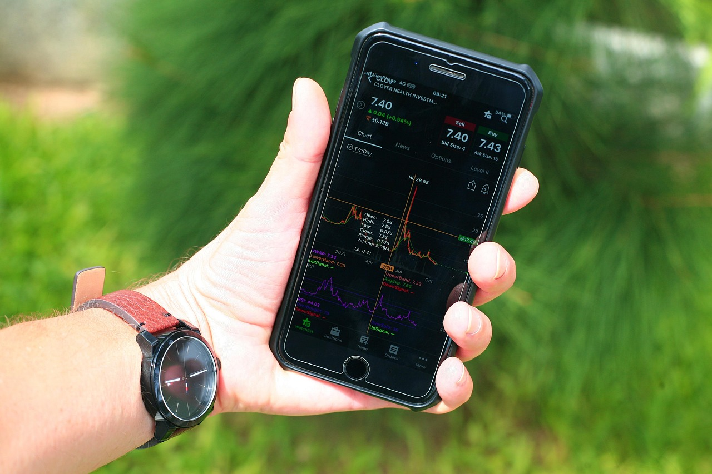

TL;DR
To adjust your ETF investments effectively, monitor market conditions monthly and consider reallocation when indicators shift. Active management can protect against significant losses, so be prepared to adjust your allocations timely. Using low-cost, diversified ETFs like VOO or IXUS can simplify this process.
Quick Answer
### Quick Answer
To effectively adjust your ETF investments, start by closely observing market indicators and trends at least once a month. For example, suppose you're invested in the SPDR S&P 500 ETF Trust (SPY) and start to see signs of rising inflation, such as increasing interest rates, which are currently around 5%.
In this case, you might consider reallocating 20% of your investment—let's say $10,000—into defensive sectors to mitigate risk. Investing in utilities or consumer staples ETFs, like the Utilities Select Sector SPDR Fund (XLU) or the Consumer Staples Select Sector SPDR Fund (XLP), could be a wise move.
If you choose to allocate 10% of your portfolio, or $5,000, towards XLU, you might expect to experience less volatility as these sectors tend to do well in bearish markets. Historical data shows that during economic downturns, utilities often outperform the broader market due to their consistent demand.
Additionally, keep an eye on quarterly earnings reports from your selected sectors. For instance, if a major utility company like Duke Energy (DUK) announces strong earnings, this can further validate your decision to shift funds into XLU.
For timing, consider implementing these adjustments at the beginning of a quarter when companies typically release their earnings, allowing you to gauge sector performance before making any definitive moves. However, remember that reallocating portions of your investments can incur trading fees, possibly affecting your overall returns.
In a scenario where you initially invest $50,000 in SPY during a bullish market, a shift toward defensive sectors when indicators signal market instability may help protect a greater portion of your investment.
If the market experiences a downturn and SPY drops by 15%, your initial investment would typically decline to $42,500. However, if your strategically reallocated funds in XLU only drop by 5%, your adjusted portfolio balance may hold up better, resulting in a smaller overall loss.
This proactive strategy is vital for maintaining your financial health during changing market conditions.
Why Most Investors Pick the Wrong ETFs
### Why Most Investors Pick the Wrong ETFs
Many investors adhere to a 'set it and forget it' mentality, mistakenly believing that passive ETF investments can weather any storm. This complacency can lead to significant risks, particularly in volatile markets where conditions can change rapidly.
For instance, consider an investor who holds the Vanguard Total Stock Market ETF (VTI), which aims to track the performance of the entire U.S. stock market. While VTI has historically provided robust long-term returns, this investor might remain oblivious to rising correlations between asset classes, such as stocks and bonds during economic turmoil.
Take the period following the 2018 Federal Reserve interest rate hikes, where the benchmark rate rose from 1.5% to 2.5%. Many investors holding broad-based ETFs, including VTI, experienced declines as interest rates affected equity valuations.
For instance, in just a few months following the hikes, the S&P 500 saw a pullback of over 10%. In this environment, an unprepared investor could have suffered substantial losses due to a lack of diversification in their ETF holdings.
Moreover, investing solely in a single asset class, like large-cap U.S. equities, may not provide the necessary buffer during downturns. During the onset of the COVID-19 pandemic in early 2020, sectors such as technology and consumer discretionary faced extreme volatility.
An investor overly concentrated in a tech ETF like the Invesco QQQ Trust (QQQ) would have seen its value drop by approximately 30% in a matter of weeks, illustrating how a narrow focus can backfire.
Consider a scenario where an investor initially allocated 50% of their portfolio to an ETF focused on emerging markets, such as the iShares MSCI Emerging Markets ETF (EEM). As geopolitical tensions rise and inflation concerns become more pronounced, emerging markets often become riskier investments.
If this investor fails to reconsider their allocation, relying on the notion that these markets will recover as they have in the past, they could miss warning signs indicating a prolonged downturn.
In July 2021, emerging markets lagged behind the S&P 500 by nearly 10% due to various headwinds, including slower economic recovery rates in some countries.
The lack of periodic reassessment can trap investors in positions that no longer align with their risk tolerance or market outlook. Regularly adjusting ETF investments in response to changing market conditions is crucial.
This doesn't just entail deciding to sell or hold; it requires a proactive approach to asset allocation and market trends. An ETF investor who actively manages their portfolio might consider reallocating some funds to defensive sectors or international markets that could perform better in rising rate environments.
This could involve a shift of 10-20% of one's portfolio into less correlated assets, like fixed income or international ETFs, especially when signs of volatility begin to surface.
Thus, while ETFs can simplify the investment process, neglecting to revisit and adjust your holdings can lead to missed opportunities and increased risk.
A 30-Day Workflow for Adjusting Your ETF Allocations
### A 30-Day Workflow for Adjusting Your ETF Allocations
Implementing a structured workflow for reviewing your ETF allocations can safeguard against market volatility. Here’s a comprehensive 30-day process to ensure your investments are aligned with market conditions: 1. Market Review (Days 1-5): Begin by analyzing key economic indicators. Examine reports on inflation, such as the Consumer Price Index (CPI), where a rising CPI above 3% might indicate inflationary pressures affecting market sectors.
Monitor interest rate announcements, such as the Federal Reserve's quarterly meetings, which may suggest upcoming shifts in economic policy. For instance, an expected rate hike could negatively impact interest-sensitive ETFs like REITs or Utilities.
Pay attention to global events (e.g., geopolitical tensions, trade agreements) that could trigger significant market movements. 2. Performance Assessment (Days 6-10): Review the performance of your current ETFs during the preceding month. Look closely at price movements and volatility over varying timeframes (1 month, 3 months, and 1 year).
Use platforms like Morningstar for detailed metrics; for example, if your technology ETF has underperformed by 8% in the past quarter while the S&P 500 index gained 5%, it could indicate a need for reevaluation.
Also, check fee structures—anomalies like a jump in expense ratios may tip the scales away from staying invested. 3. Portfolio Allocation Check (Days 11-20): Comparing your current asset allocation against predicted market dynamics is crucial. Ideally, a balanced portfolio could consist of 60% equities and 40% fixed income in stable markets.
However, if data suggests an economic downturn, you might want to pivot to a heavier allocation in defensive sectors such as consumer staples or healthcare. Realistically, you may decide to reduce your exposure from a high-risk tech ETF from 15% to 10% and increase your holdings in a gold ETF from 5% to 10%, acknowledging the hedge gold offers during recessionary pressures. 4. Adjustment Implementation (Days 21-25): After gathering all necessary data, decide on adjustments. This stage may involve selling ETFs that have underperformed consistently or reallocating to sectors expected to yield better returns.
For instance, if you’ve deduced that emerging markets ETFs are likely to bounce back within the next quarter, consider shifting 5% of your portfolio from U.S. large-cap ETFs to an emerging markets fund.
This could be a well-timed move depending on economic shifts identified in your earlier analysis. 5. Monitoring & Feedback Loop (Days 26-30): Once adjustments are made, implement a monitoring system where you regularly check the performance of your new allocations. Set up alerts for significant price movements and review the rationale behind these changes.
Consider reviewing your ETF holdings every quarter to refine this process further. For example, if you shifted your portfolio and the emerging markets ETF fails to meet benchmarks, evaluate whether to hold for a longer-term recovery or cut losses.
Scenario: Let's say you initially invested 30% in a U.S. technology ETF at $100. After analysis, you notice that the sector is rapidly declining due to supply chain issues, resulting in a drop to $80.
By following this workflow, you've decided to reduce your exposure and reallocate to a sector ETF focused on renewable energy, aiming for a more sustainable growth trajectory. In your initial allocation change, you sold your tech position at a loss but redirected 15% to green energy, which subsequently rallies by 25% in the following year—this strategic shift pays off significantly despite the initial losses.
Applying this 30-day workflow can optimize your ETF strategy, allowing for efficient adjustments that adapt to fluctuating market conditions.
A Simple Beginner Example With Numbers

### A Simple Beginner Example With Numbers
Let’s dive into a straightforward scenario to see how an investor can effectively adjust their ETF investments during changing market conditions. Imagine an investor with an initial portfolio of $10,000, split between two types of ETFs. They allocate 60% ($6,000) to growth-oriented funds like the ARK Innovation ETF (ARKK) and 40% ($4,000) to more conservative options such as the iShares Russell 2000 ETF (IWM).
After a market downturn, ARKK experiences a significant drop of 30%. This causes its value to fall to $4,200, while IWM remains relatively stable at $4,000. The investor's portfolio now looks like this:
- ARKK: $4,200
- IWM: $4,000
To rebalance their portfolio in response to the changing market dynamics, the investor evaluates their options. They decide to lower their exposure to ARKK, selling 25% of their holdings. With ARKK worth $4,200, this translates to selling $1,050 worth of ARKK, bringing its new total down to $3,150.
What happens next? The investor doesn't want to keep all their eggs in one basket. Instead, they choose to reinvest the $1,050 from ARKK into the iShares Core MSCI Emerging Markets ETF (IEMG). By diversifying geographically through IEMG, they open themselves up to potential new growth in international markets. After this decision, the portfolio is now restructured as follows:
- New ARKK total: $3,150
- New IWM total: $4,000
- New IEMG total: $1,050
This adjustment reflects a strategic shift. However, it’s important to understand the trade-offs. The investor has reduced their exposure to a high-risk, high-reward growth fund in a turbulent market and opted for a mix that may experience slower growth but is more diversified. Although emerging markets can carry their own risks, they may also present new opportunities, especially if the U.S. market remains volatile.
Now, let’s imagine that this investor decides to revisit their portfolio six months later. If the markets have shifted and emerging markets have appreciated by 15% while ARKK still lags behind, the values could look something like this:
- ARKK: $3,150 (still impacted by past downturns)
- IWM: $4,000 (holding steady)
- IEMG: $1,207.50 (increased from $1,050)
At this point, the investor faces another opportunity to reassess. They could choose to reduce holdings in IEMG and reallocate that into ARKK, taking advantage of its potentially lower price point or wait until a more favorable market condition emerges.
This illustrates the ongoing process of adjusting ETF investments amidst shifting market landscapes, highlighting both the necessity of rebalancing and the importance of strategic decision-making based on individual risk tolerance and market analysis.
Mistakes That Cost Real Money
### Mistakes That Cost Real Money
When navigating ETF investments, several costly mistakes can arise that not only impact short-term returns but also jeopardize long-term financial goals. One prevalent pitfall is the tendency to overreact to negative market news.
For instance, if geopolitical tensions escalate, leading to a market drop of 15% in a matter of days, an impulsive investor might panic and hastily liquidate their equity holdings in multiple ETFs.
This knee-jerk reaction can lock in losses and disregard the overarching investment strategy. In reality, historically, markets have shown resilience; for example, during the 2008 financial crisis, the S&P 500 rebounded sharply after an initial plunge of over 50%.
Those who held on rather than selling at the bottom were ultimately rewarded when the market recovered.
Another common mistake is neglecting to consider the impact of fees and expense ratios on investment returns. Investors may be drawn to high-performing funds, yet overlook their expense ratios, which can significantly erode profits over time.
For instance, suppose you invest $10,000 in an ETF with a 0.5% expense ratio versus one with a 1.5% ratio. Over 20 years, assuming an average annual return of 7% (after fees), the lower-cost fund would yield around $38,000 while the higher-cost option would generate only about $33,000.
The consequence of that 1% difference amounts to a staggering $5,000 in lost earnings—money that could have been utilized for reinvestment or other financial goals.
Consider a scenario where an investor, let's call her Sarah, decides to shift her ETF portfolio due to market volatility surrounding interest rate hikes. She hastily sells her bond ETFs, fearing declines, without a proper analysis.
Instead of reviewing her asset allocation, she reallocates into tech-focused ETFs, convinced that they’ll rebound quickly. However, after a period of volatility, those tech stocks face a downturn, and Sarah's portfolio reflects a 20% dip.
If she had maintained her balanced allocation, even amidst a market shake-up, the diversified approach could have mitigated losses.
These mistakes, whether driven by fear, lack of planning, or failure to consider fees, can lead to detrimental effects on financial health. Understanding the root causes of these behaviors is essential for any investor seeking to navigate market fluctuations successfully.
Which Tools or ETFs Make This Simpler
### Which Tools or ETFs Make This Simpler
Navigating ETF investments requires the right tools to streamline your decision-making process and keep your portfolio aligned with market conditions. Start with portfolio management platforms like Personal Capital or Wealthfront, both of which allow you to visualize asset allocation and performance over time.
For example, Personal Capital tracks your investments and notifies you if your tech ETFs exceed your preferred 20% allocation threshold, prompting you to consider rebalancing. This can be particularly useful in volatile markets, where tech stocks might surge unexpectedly.
In addition, tools such as Yahoo Finance and Google Finance offer comprehensive tracking features that provide real-time data on your ETFs. You can set up alerts for price changes or news updates concerning your holdings, helping you stay informed about events that could impact your investments.
For instance, if an ETF that invests in renewable energy sees a sudden 10% drop due to regulatory changes, you can swiftly assess whether it’s a temporary setback or a sign to reconsider your stake.
Moreover, consider utilizing specialized ETF screening tools like ETFdb or Morningstar. These platforms allow you to filter ETFs based on various criteria, such as expense ratios, performance metrics, or sector exposures.
If you’re looking to pivot your investments towards emerging markets due to anticipated growth, you could filter by ETFs focused on those sectors and analyze their average annual returns, say 8-12% over the last five years.
For a practical scenario, imagine you’re holding an ETF that tracks the S&P 500. If sector performance shows that consumer discretionary stocks are underperforming—perhaps due to rising inflation—using these tools can signal whether it’s time to cap your investment in that ETF and look for alternatives.
By doing so, you avoid potential losses in a troubled sector while reallocating funds to a burgeoning technology or healthcare ETF that’s trending upwards. Such timely adjustments could lead to a significant difference in overall returns, potentially enhancing your annualized gains by 2-3% if done effectively.
FAQ
How often should I review my ETF investments?
It's advisable to review your ETF investments monthly to account for market changes and economic indicators.
What are reliable indicators for adjusting my ETF strategy?
Key indicators include inflation rates, interest rate changes, and overall market sentiment, helping you determine when to adjust allocations.
What’s a good ratio of ETFs to hold in a diversified portfolio?
Aiming for 5-10 different ETFs across various sectors can provide sufficient diversification.
This article has been reviewed for practical usefulness and is updated when market information changes.
Next step
Use the article as a decision point, not just reading material. Your next system matters more than more browsing.
Search more articles
Find related tools, workflows, and guides.
Photo credits
- Photo 1: Markus Winkler via Unsplash
- Photo 2: Mateus Campos Felipe via Unsplash
- Photo 3: viarami via Pixabay
- Photo 4: sergeitokmakov via Pixabay
- Photo 5: janeb13 via Pixabay